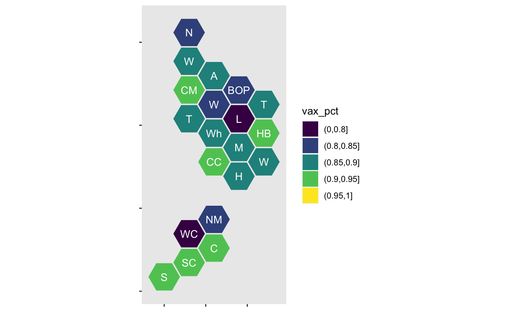
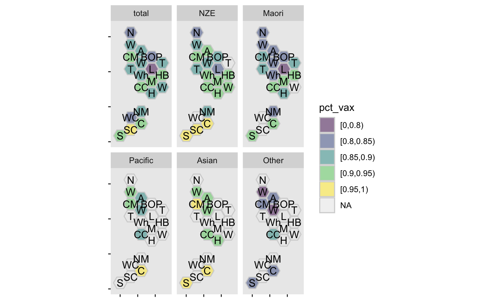
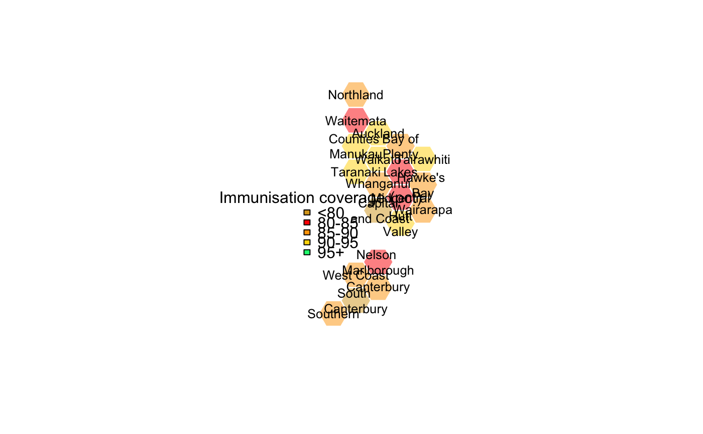

immune.RdThe report measures the number of children who turned the milestone age of 5 years between 01-Jul-2019 and 30-Sep-2019 and who have completed their age appropriate immunisations by the time they turned the milestone age. The target is 95%. Children are only counted once, according to 'prioritised ethnicity': the priority order is Māori, Pacific, Asian, other, NZ European. The immune_long variant is in long form with separate rows for each ethnicity, and with missing values where the population size is too small.
data("immune")
For immune, a data frame with 20 observations on the following 19 variables.
DHBname of District Health Board
NtotalNumber of children
VaxtotalNumber who completed their vaccinations
PcttotalProportion
NNZE,VaxNSE,PctNZEthe same, for children of NZ European ethnicity
NMaori,VaxMaori,PctMaorithe same, for children of Māori ethnicity
NPacific,VaxPacific,PctPacificthe same, for children of Pacific ethnicities
NAsian,VaxAsian,PctAsian the same, for children of Asian ethnicities
NOther,VaxOther,PctOtherthe same, for children of other ethnicities
For immune_long, a data frame with 120 observations on the following 3 variables.
DHBname of District Health Board
ethnicityethnicity: a factor with levels total NZE Maori Pacific Asian Other
pct_vaxpercent vaccinated, a factor with levels [0,0.8) [0.8,0.85) [0.85,0.9) [0.9,0.95) [0.95,1)
New Zealand Health Indicators, 2019
Statistics New Zealand. Health Indicators. http://archive.stats.govt.nz/browse_for_stats/snapshots-of-nz/nz-social-indicators/Home/Health/childhood-immunisation.aspx
#> DHB Ntotal Vaxtotal Pcttotal #> Length:20 Min. : 99.0 Min. : 79.0 Min. :0.790 #> Class :character 1st Qu.: 355.0 1st Qu.: 302.5 1st Qu.:0.850 #> Mode :character Median : 557.0 Median : 504.0 Median :0.875 #> Mean : 798.4 Mean : 704.1 Mean :0.874 #> 3rd Qu.:1046.8 3rd Qu.: 954.8 3rd Qu.:0.910 #> Max. :2206.0 Max. :2015.0 Max. :0.950 #> #> NNZE VaxNZE PctNZE NMaori #> Min. : 51.0 Min. : 46.0 Min. :0.8400 Min. : 18.0 #> 1st Qu.:141.5 1st Qu.:122.0 1st Qu.:0.8850 1st Qu.:113.8 #> Median :236.0 Median :209.5 Median :0.9100 Median :148.0 #> Mean :314.2 Mean :285.4 Mean :0.9030 Mean :195.2 #> 3rd Qu.:369.0 3rd Qu.:339.2 3rd Qu.:0.9225 3rd Qu.:269.2 #> Max. :947.0 Max. :904.0 Max. :0.9500 Max. :492.0 #> #> VaxMaori PctMaori NPacific VaxPacific #> Min. : 15.00 Min. :0.770 Min. : 15.00 Min. : 13.0 #> 1st Qu.: 94.75 1st Qu.:0.820 1st Qu.: 22.75 1st Qu.: 21.0 #> Median :133.50 Median :0.850 Median : 40.50 Median : 39.0 #> Mean :166.05 Mean :0.858 Mean :108.29 Mean :103.5 #> 3rd Qu.:242.25 3rd Qu.:0.910 3rd Qu.: 80.25 3rd Qu.: 71.0 #> Max. :428.00 Max. :0.940 Max. :649.00 Max. :595.0 #> NA's :6 NA's :7 #> PctPacific NAsian VaxAsian PctAsian #> Min. :0.6000 Min. : 24.0 Min. : 18.0 Min. :0.750 #> 1st Qu.:0.8500 1st Qu.: 35.0 1st Qu.: 31.0 1st Qu.:0.890 #> Median :0.9100 Median : 76.0 Median : 69.0 Median :0.910 #> Mean :0.8958 Mean :189.1 Mean :173.7 Mean :0.919 #> 3rd Qu.:0.9750 3rd Qu.:212.0 3rd Qu.:196.5 3rd Qu.:0.970 #> Max. :1.0000 Max. :679.0 Max. :620.0 Max. :1.000 #> NA's :1 NA's :5 NA's :5 #> NOther VaxOther PctOther #> Min. : 10.00 Min. : 10.00 Min. :0.2700 #> 1st Qu.: 27.25 1st Qu.: 23.00 1st Qu.:0.6525 #> Median : 50.50 Median : 44.50 Median :0.7400 #> Mean : 75.44 Mean : 63.88 Mean :0.7185 #> 3rd Qu.:112.25 3rd Qu.: 98.00 3rd Qu.:0.8400 #> Max. :260.00 Max. :181.00 Max. :0.9300 #> NA's :2 NA's :4immune$vax_pct<-cut(immune$Pcttotal,c(0,.80,.85,.90,.95,1)) ggplot(immune)+ geom_dhb(aes(fill=vax_pct,map_id=dhb_fixname(DHB)))+ scale_fill_viridis_d(drop=FALSE)+ geom_label_dhb(short=TRUE,colour="white")data(immune_long) ggplot(immune_long) + geom_dhb(aes(map_id=dhb_fixname(DHB),fill=pct_vax),alpha=0.5,colour="lightgrey") + scale_fill_viridis_d(drop=FALSE)+ geom_label_dhb(short=TRUE,colour="black")+ facet_wrap(~ethnicity)cols<-c("goldenrod","red","orange","gold","springgreen") with(immune, dhbin(hex_colours=cols[vax_pct], legend_opts=list(fill=cols, legend=c("<80","80-85","85-90","90-95","95+"), title="Immunisation coverage (pct)") ))## Add some transparency with(immune, dhbin(hex_colours=adjustcolor(cols[vax_pct],alpha.f=.5), legend_opts=list(fill=cols, legend=c("<80","80-85","85-90","90-95","95+"), title="Immunisation coverage (pct)") ))